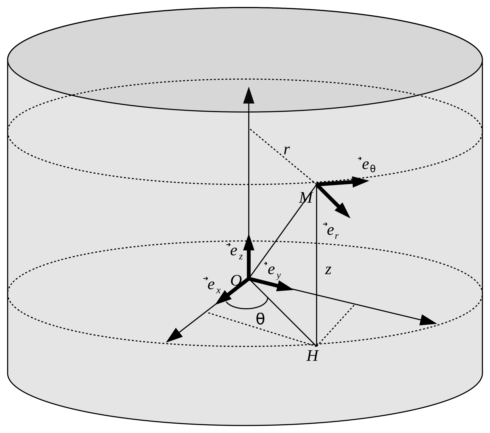

On considère que l'espace physique est un espace affine euclidien de dimension 3.
Cela signifie qu’il faut 3 coordonnées pour définir la position d’un point \(M\) quelconque
dans l’espace.
On note \(O\) un point fixe de l’espace qui sert de référence (point origine).
Le point \(M\) est alors repéré par rapport à \(O\) : on note
\( \overrightarrow { r } = \overrightarrow { OM } \)
le vecteur position de \(M\).
Le vecteur \( \overrightarrow{OM} \) est repéré grâce à une base vectorielle notée
\( \left(
\overrightarrow{ e_1 }, \overrightarrow{ e_2 }, \overrightarrow{ e_3 }
\right) \).
La base vectorielle et le point origine constituent un repère d’espace (ou repère de
référence)
\( \left(
O, \overrightarrow{ e_1 }, \overrightarrow{ e_2 }, \overrightarrow{ e_3 }
\right) \).
Le vecteur \( \overrightarrow { OM } \) peut alors se décomposer dans cette base
en :
$$ \overrightarrow { OM } = u_1\overrightarrow{ e_1 } + u_2\overrightarrow{ e_2 }
+ u_3\overrightarrow{ e_3 } $$
\( (u_1, u_2, u_3) \) sont les coordonnées du vecteur \( \overrightarrow { OM } \)
dans la base
\( \left(
\overrightarrow{ e_1 }, \overrightarrow{ e_2 }, \overrightarrow{ e_3 }
\right) \).
Il est très important de bien choisir le système de coordonnées dans lequel la description
du problème va être faite pour simplifier les calculs.
Coordonnées cartésiennes
Définition
Soit un point fixe \(O\) (appelé origine), et une base orthonormée directe
\( \left(
\overrightarrow{ e_x }, \overrightarrow{ e_y }, \overrightarrow{ e_z }
\right) \) fixe.
Le vecteur position se note :
$$
\overrightarrow{ OM } =
x\overrightarrow{ e_x }
+ y\overrightarrow{ e_y }
+ z\overrightarrow{ e_z }
$$
L’abscisse \(x\), l’ordonnée \(y\) et la cote \(z\) sont les coordonnées cartésiennes du
point \(M\).
Dérivées temporelles par rapport au repère
\(\left(
O, \overrightarrow{e_x}, \overrightarrow{e_y}, \overrightarrow{e_z}
\right)\)
Les vecteurs \(\overrightarrow{ e_x }\), \(\overrightarrow{ e_y }\) et
\(\overrightarrow{ e_z }\) étant fixes dans le repère de référence \( \left( O,
\overrightarrow{ e_x }, \overrightarrow{ e_y }, \overrightarrow{ e_z } \right) \),
leur dérivée par rapport au temps est nulle.
Coordonnées cylindriques
Définition
Soit le repère \( \left( O,\overrightarrow{e_x}, \overrightarrow{e_y},
\overrightarrow{e_z} \right) \) précédemment défini.
Soit \(M\) un point que l’on cherche à repérer.
L’axe privilégié du problème est placé suivant \(\left(O,\overrightarrow{ e_z }
\right)\).
Soit \(H\) le projeté de \(M\) sur le plan \( \left( O,\overrightarrow{ e_x },
\overrightarrow{ e_y } \right) \), et \(Z\) le projeté de M sur l’axe \(\left(O,
\overrightarrow{ e_z }\right)\).
Le point \(M\) est repéré par :
\(r\) la distance de \(M\) à l’axe \(\left(O,
\overrightarrow{ e_z }\right)\), soit la distance \(ZM\)
La base locale associée à ce système de coordonnées cylindriques est notée
\( \left( \overrightarrow{ e_r }, \overrightarrow{ e_\theta },
\overrightarrow{ e_z } \right) \) avec :
\(\overrightarrow{ e_r } = \frac{\overrightarrow{OH}}{OH}\), c’est le vecteur
radial
\(\overrightarrow{ e_\theta }\) se déduit de \(\overrightarrow{ e_r }\) d’une rotation
de \(\frac{\pi}{2}\) autour de \(\left(O,\overrightarrow{ e_z }\right)\), c’est le vecteur
orthoradial
\(\overrightarrow{ e_z }\) complète le trièdre direct (\(\overrightarrow{ e_z } =
\overrightarrow{ e_r } \wedge \overrightarrow{ e_\theta }\))

schéma coordonnées cylindriques
Le vecteur position se note :
$$ \overrightarrow{ OM } = r\overrightarrow{ e_r } + z\overrightarrow{ e_z } $$
Le rayon polaire \(r\), angle polaire \(\theta\) et la cote \(z\) sont les coordonnées
cylindriques du point \(M\).
La position de chaque point doit être définie par un unique triplet
\( \left( r,\theta,z \right) \). \(r\) ne varie donc que de \(0\) à \(\infty \),
\(\theta\) varie de \(0\) à \(2\pi\) et \(z\) varie de \(-\infty \) à \(\infty \).
Projection des vecteurs mobiles dans le repère \( R = \left( O, \overrightarrow{ e_x },
\overrightarrow{ e_y }, \overrightarrow{ e_z } \right) \)
Soit le repère \( R= \left( O,\overrightarrow{e_x}, \overrightarrow{e_y},
\overrightarrow{e_z} \right) \) précédemment défini.
Soit \(M\) un point que l’on cherche à repérer.
Soit \(H\) le projeté de \(M\) sur le plan \( \left( O,\overrightarrow{ e_x },
\overrightarrow{ e_y } \right) \).
La base locale associée à ce système de coordonnées sphériques est notée
\( \left( \overrightarrow{ e_r }, \overrightarrow{ e_\theta },
\overrightarrow{ e_\varphi } \right) \) avec :
\(\overrightarrow{e_r}= \frac{\overrightarrow{OM}}{OM}\), c’est le vecteur radial
\(\overrightarrow{ e_\theta }\) est alors un vecteur du plan vectoriel
\( \left(\overrightarrow{ e_z },\overrightarrow{ e_r }\right) \) et se déduit de
\(\overrightarrow{ e_r }\) d’une rotation de \(\frac{\pi}{2}\), c’est le vecteur
orthoradial
\(\overrightarrow{ e_\varphi }\) complète le trièdre direct
(\(\overrightarrow{ e_\varphi } = \overrightarrow{ e_r } \wedge
\overrightarrow{ e_\theta }\)). C’est un vecteur du plan vectoriel
\( \left(\overrightarrow{ e_x },\overrightarrow{ e_y }\right) \) car il est
orthogonal à \( \overrightarrow{ e_z } \)
schéma coordonnées sphériques
Le vecteur position se note :
$$ \overrightarrow{ OM } = r\overrightarrow{ e_r }$$
Le rayon \(r\), la colatitude \(\theta\) et l’azimut \(\varphi\) sont les
coordonnées sphériques du point \(M\).
La position de chaque point doit être définie par un unique triplet
\( \left( r,\theta,\varphi \right) \). \(r\) ne varie donc que de \(0\) à
\(\infty \), \(\theta\) varie de \(0\) à \(\pi\) et \(\varphi\) varie de \(0 \) à
\(2\pi \).
Projection des vecteurs mobiles dans le repère
\( R = \left(
O, \overrightarrow{e_x}, \overrightarrow{e_y}, \overrightarrow{e_z}
\right) \)
Exprimons les vecteurs \(\overrightarrow{ e_r }\), \(\overrightarrow{ e_\theta }\)
et \(\overrightarrow{ e_\varphi }\) dans le repère \( \left( O,
\overrightarrow{ e_x }, \overrightarrow{ e_y }, \overrightarrow{ e_z } \right) \).
Soit \(H\) la projection de \(M\) sur le plan \( \left( O, \overrightarrow{ e_x },
\overrightarrow{ e_y } \right) \).
Le vecteur unitaire \(\overrightarrow{ u } \) suivant la droite \((OH)\) a pour
expression :
$$
\overrightarrow{u} = \cos(\varphi)\overrightarrow{e_x}
+ \sin(\varphi)\overrightarrow{e_y}
$$
Le vecteur \(\overrightarrow{e_\varphi}\) est directement perpendiculaire à
\(\overrightarrow{ u }\) et s’écrit donc :
$$
\overrightarrow{ e_\varphi } = -\sin(\varphi)\overrightarrow{e_x}
+\cos(\varphi)\overrightarrow{e_y}
$$